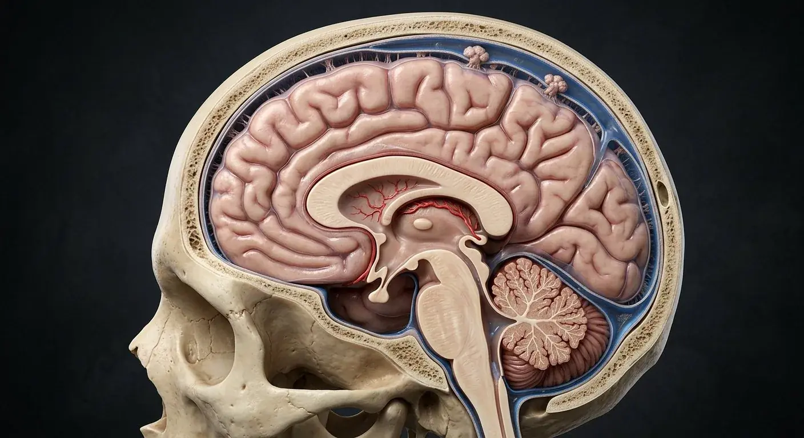

Periosteal cranial duraArachnoid materSubarachnoid spaceChoroid plexusLateral ventriclesSuperior sagittal sinusArachnoid granulationsMeningeal cranial duraBridging cerebral veinsFalx cerebriPia materStraight sinusInterventricular foraminaThird ventricleTentorium cerebelliCerebral aqueductTransverse sinusSigmoid sinusFourth ventricleSubarachnoid cisterns- 01Falx cerebri
- 02Tentorium cerebelli
- 03Superior sagittal sinus
- 04Arachnoid mater
- 05Pia mater
- 06Choroid plexus
- 07Lateral ventricles
- 08Fourth ventricle
- 09Subarachnoid cisterns
- 10Periosteal cranial dura
- 11Meningeal cranial dura
- 12Straight sinus
- 13Transverse sinus
- 14Subarachnoid space
- 15Interventricular foramina
- 16Third ventricle
- 17Cerebral aqueduct
- 18Arachnoid granulations
- 19Sigmoid sinus
- 20Bridging cerebral veins
How this part of the body works
Suspended in crystal-clear cerebrospinal fluid and wrapped in three protective membranes, the living brain floats inside the skull so its own weight does not crush its base. Cranial dura has periosteal and meningeal layers that separate at dural venous sinuses and create falx/tentorium folds. The arachnoid bridges across sulci; CSF occupies the subarachnoid space between arachnoid and pia, which closely follows brain contours. Choroid plexus secretes much CSF into ventricles: lateral → interventricular foramina → third → cerebral aqueduct → fourth → median/lateral apertures → subarachnoid cisterns. Arachnoid granulations drain much of it to dural sinuses, alongside other clearance routes. The subdural space is a potential pathologic space, not the normal CSF compartment. Within the human body, the meninges, csf & venous sinuses (Meninges · liquor cerebrospinalis · sinus durae matris) is situated in skull and spinal canal: layered coverings, ventricular cavities and dural venous channels, receives arterial perfusion via middle meningeal artery supplies dura; venous sinuses drain cerebral veins to jugular system, and is innervated by trigeminal and upper cervical sensory innervation to cranial dura; brain parenchyma itself lacks pain receptors.
The periosteal cranial dura (Stratum periostale durae) is outer cranial dural layer adherent to inner skull. Physiologically, the periosteal cranial dura forms tough outer covering and part of sinus walls. The meningeal cranial dura (Stratum meningeale durae) is inner tough dural layer reflecting as falx and tentorium. Physiologically, the meningeal cranial dura governs partitions cranial cavity and surrounds sinuses. Structurally, the falx cerebri comprises vertical sickle-shaped dural sheet between hemispheres. Physiologically, the falx cerebri supports superior and inferior sagittal sinuses. Structurally, the tentorium cerebelli comprises dural roof over cerebellum with tentorial notch around midbrain. Physiologically, the tentorium cerebelli governs partitions supratentorial and infratentorial spaces. Structurally, the superior sagittal sinus (Sinus sagittalis superior) comprises midline dural channel at upper attached edge of falx. Physiologically, the superior sagittal sinus receives superficial cerebral veins and arachnoid granulation drainage. Structurally, the straight sinus (Sinus rectus) comprises sinus at falx–tentorium junction receiving inferior sagittal and great cerebral venous drainage. Physiologically, the straight sinus governs transfers deep cerebral venous return posteriorly.
Clinically, regarding the periosteal cranial dura, spinal epidural space differs from cranial periosteal interface. From a diagnostic standpoint, in the meningeal cranial dura, dural folds constrain mass displacement. In clinical pathology involving the falx cerebri, bridging veins cross toward its superior sinus. Medical evaluation of the tentorium cerebelli also notes that herniation at notch threatens brainstem.
Connected study pathways in this atlas: Brain, Cerebrum · cortex & deep pathways, Brainstem & cerebellar circuitry.
Read the anatomy, part by part
These 20 structures describe anatomy related to the chapter’s regional illustration. Each entry separates location, function and a clinical point.
Periosteal cranial dura
Outer cranial dural layer adherent to inner skull.
What it doesForms tough outer covering and part of sinus walls.
Clinical connectionSpinal epidural space differs from cranial periosteal interface.
Meningeal cranial dura
Inner tough dural layer reflecting as falx and tentorium.
What it doesPartitions cranial cavity and surrounds sinuses.
Clinical connectionDural folds constrain mass displacement.
Falx cerebri
Vertical sickle-shaped dural sheet between hemispheres.
What it doesSupports superior and inferior sagittal sinuses.
Clinical connectionBridging veins cross toward its superior sinus.
Tentorium cerebelli
Dural roof over cerebellum with tentorial notch around midbrain.
What it doesPartitions supratentorial and infratentorial spaces.
Clinical connectionHerniation at notch threatens brainstem.
Superior sagittal sinus
Midline dural channel at upper attached edge of falx.
What it doesReceives superficial cerebral veins and arachnoid granulation drainage.
Clinical connectionSinus thrombosis impairs venous outflow.
Straight sinus
Sinus at falx–tentorium junction receiving inferior sagittal and great cerebral venous drainage.
What it doesTransfers deep cerebral venous return posteriorly.
Clinical connectionDeep venous obstruction affects thalami.
Transverse sinus
Paired channels from confluence toward sigmoid sinuses.
What it doesDrain toward internal jugular veins.
Clinical connectionDominance may be asymmetric normally.
Arachnoid mater
Thin membrane deep to dura spanning over sulci; trabeculae bridge to pia.
What it doesBounds CSF-filled subarachnoid space.
Clinical connectionBlood in subarachnoid space can irritate meninges.
Subarachnoid space
True CSF-filled space between arachnoid and pia containing vessels.
What it doesBathes brain and spinal cord.
Clinical connectionSite of lumbar puncture below spinal cord termination.
Pia mater
Delicate vascular membrane closely following gyri, sulci and cord surface.
What it doesInvests nervous tissue and supports pial vessels.
Clinical connectionUnlike arachnoid, pia follows sulcal contours.
Choroid plexus
Vascular core with specialized epithelial covering in ventricles.
What it doesSecretes much of cerebrospinal fluid and forms blood–CSF barrier.
Clinical connectionCSF production is not confined to one ventricle.
Lateral ventricles
Paired curved cavities of cerebral hemispheres.
What it doesDrain through interventricular foramina into third ventricle.
Clinical connectionObstruction can enlarge upstream ventricle.
Interventricular foramina
Paired openings commonly called foramina of Monro.
What it doesConnect lateral ventricles to third ventricle.
Clinical connectionFocal obstruction causes asymmetric ventricular dilation.
Third ventricle
Midline cavity between diencephalic structures.
What it doesConducts CSF to cerebral aqueduct.
Clinical connectionBorders include thalamus and hypothalamus.
Cerebral aqueduct
Narrow midbrain passage between third and fourth ventricles.
What it doesMaintains ventricular CSF continuity.
Clinical connectionAqueductal stenosis can cause obstructive hydrocephalus.
Fourth ventricle
Dorsal brainstem cavity anterior to cerebellum.
What it doesEmpties into subarachnoid space by median and lateral apertures.
Clinical connectionMass near outlet may obstruct CSF flow.
Subarachnoid cisterns
Enlarged CSF spaces such as cerebellomedullary cistern.
What it doesAllow circulation around brainstem and cerebellum.
Clinical connectionCistern compression matters on brain imaging.
Arachnoid granulations
Arachnoid projections into dural venous sinuses.
What it doesMajor route for CSF movement toward venous blood.
Clinical connectionOther meningeal lymphatic/clearance paths also exist.
Sigmoid sinus
Curved dural venous channel continuing transverse sinus to jugular bulb.
What it doesDrains cranial venous blood into internal jugular vein.
Clinical connectionMastoid disease can be adjacent to its wall.
Bridging cerebral veins
Veins crossing subarachnoid and dural border region toward dural sinuses.
What it doesDrain superficial cerebral cortex.
Clinical connectionTearing can lead to subdural hematoma.
Five questions about Meninges, CSF & venous sinuses
Short answers grounded in the structures described above. Use the illustrated guide for anatomical context.
What are the three meninges around the brain?
From outside inward they are dura mater, arachnoid mater and pia mater. Cerebrospinal fluid occupies the subarachnoid space. The arachnoid mater (Arachnoidea mater) is thin membrane deep to dura spanning over sulci; trabeculae bridge to pia. Physiologically, the arachnoid mater governs bounds CSF-filled subarachnoid space.
Where does cerebrospinal fluid flow?
CSF circulates through the ventricles and subarachnoid spaces before being returned to venous or lymphatic drainage pathways. Structurally, the choroid plexus (Plexus choroideus) comprises vascular core with specialized epithelial covering in ventricles. Physiologically, the choroid plexus secretes much of cerebrospinal fluid and forms blood–CSF barrier.
What is the periosteal cranial dura?
Outer cranial dural layer adherent to inner skull. Functionally, it forms tough outer covering and part of sinus walls. In clinical pathology involving the periosteal cranial dura, spinal epidural space differs from cranial periosteal interface.
Where is the falx cerebri located?
Vertical sickle-shaped dural sheet between hemispheres. Functionally, it supports superior and inferior sagittal sinuses. Medical evaluation of the falx cerebri also notes that bridging veins cross toward its superior sinus.
What is the function of the superior sagittal sinus?
Functionally, it receives superficial cerebral veins and arachnoid granulation drainage. Midline dural channel at upper attached edge of falx. Clinically, regarding the superior sagittal sinus, sinus thrombosis impairs venous outflow.
Related anatomy guides
Follow these connected structures and body systems in the illustrated atlas.
 BrainFolded cerebral lobes, white-matter commissures, deep thalamic and basal nuclei, cerebellum, and brainstem circuits floating in protective cerebrospinal fluid.↗
BrainFolded cerebral lobes, white-matter commissures, deep thalamic and basal nuclei, cerebellum, and brainstem circuits floating in protective cerebrospinal fluid.↗ Cerebrum · cortex & deep pathwaysCoronal deep-brain architecture: six-layered neocortex, corpus callosum, internal capsule projection highway, caudate, putamen, globus pallidus, and thalamus.↗
Cerebrum · cortex & deep pathwaysCoronal deep-brain architecture: six-layered neocortex, corpus callosum, internal capsule projection highway, caudate, putamen, globus pallidus, and thalamus.↗ Brainstem & cerebellar circuitryMidbrain, pons, and medulla oblongata nuclei, corticospinal pyramidal decussation, and the three peduncles linking the brainstem to the cerebellar cortex.↗
Brainstem & cerebellar circuitryMidbrain, pons, and medulla oblongata nuclei, corticospinal pyramidal decussation, and the three peduncles linking the brainstem to the cerebellar cortex.↗ Spinal cordProtected inside the vertebral canal, a butterfly core of gray-matter neuron horns is surrounded by ascending sensory and descending motor white-matter tracts.↗
Spinal cordProtected inside the vertebral canal, a butterfly core of gray-matter neuron horns is surrounded by ascending sensory and descending motor white-matter tracts.↗Further reading
General anatomy references and related source chapters for continued study. These links do not make the digital illustrations clinical images or certify every anatomical variant.
This educational page is not medical advice and has not undergone formal clinical peer review. Spotted an error? Contact the editor.
Open the realistic interactive plate, label lines, focus view and self-test.